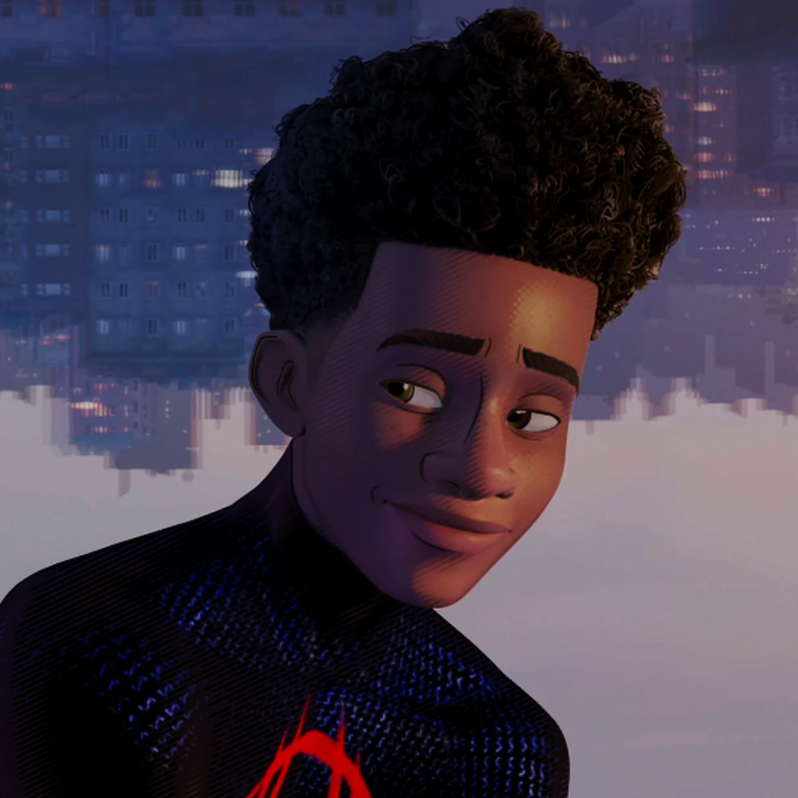
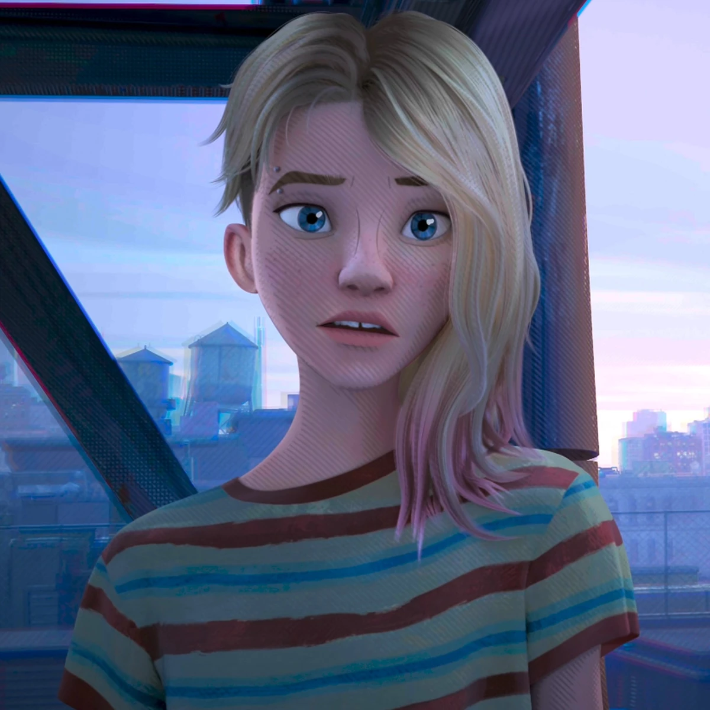
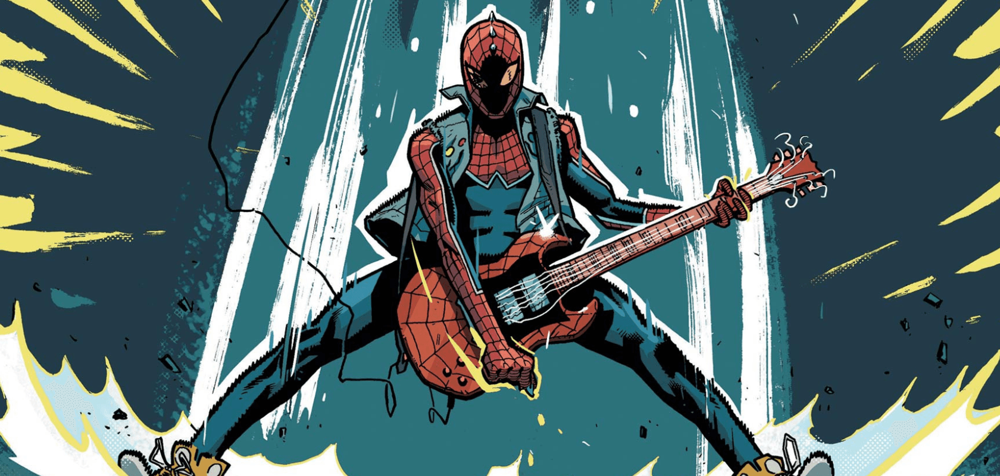

In this movie miles morales misses his old friend gwen, later on in the movie Gwen arrived from a different universe and after a quick reunion with miles she left the universe. What she didn't know was that miles followed her into different universe and eventually they had to keep miles contain in the spidey verse as his cannon event was approaching. When miles broke out of the prison he was chased by all kidns of spidermans from different universe. At the end he escape their pursuit but ends up in a universe where spiderman was killed and defeat.
I like this movie as it dives into the perspective of spidermans from different universes. My favorite character in this serie is mile morales because I love how he develops throughout the movie, I also like his personality as he tries to save everyone he loves and know whats right and whats wrong.